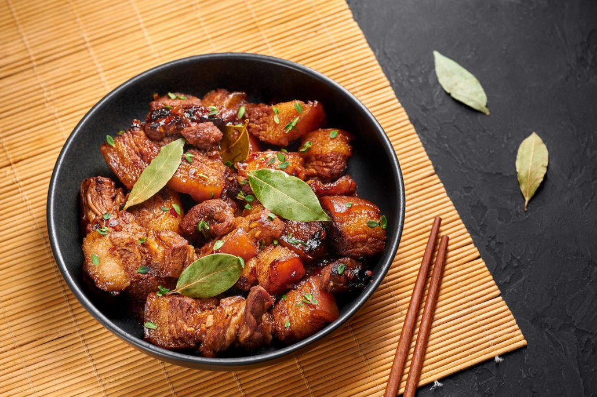

Pork Adobo with Pineapple

Ingredients
| 1 large ripe pineapple |
| 2 Tbsp. plus 2 tsp. vegetable oil |
| 2 lb. boneless pork shoulder, cut into 1½" cubes |
| Kosher salt, freshly ground pepper |
| ½ white onion, thinly sliced |
| 6 garlic cloves, thinly sliced |
| ⅔ cup cane vinegar (such as Datu Puti) or unseasoned rice vinegar |
| ½ cup Datu Puti soy sauce or ⅓ cup other brands soy sauce (such as Kikkoman) |
| 2 Tbsp. oyster sauce |
| 1 Tbsp. black peppercorns |
| 5 dried bay leaves; |
| Steamed white rice and thinly sliced scallions (for serving) Preparation |
Preparation
| Step 1 |
| Peel and core pineapple. Cut half of pineapple into bite-size pieces (about 1"); set aside. Chop remaining pineapple into small pieces and transfer to a small saucepan. Cook over low heat, stirring occasionally, until very soft and broken down and nearly all juice is evaporated, 15–18 minutes. Transfer to a blender and add ¼ cup water; purée until smooth. |
| Step 2 |
| Heat 2 Tbsp. oil in a large Dutch oven or other heavy pot over medium-high. Lightly season pork with salt and pepper. Working in 2 batches, cook pork until well browned on all sides, 5–8 minutes per batch. Transfer to a plate. |
| Step 3 |
| Reduce heat to medium-low and add onion and garlic to same pot. Cook, stirring often, until fragrant and softened, about 5 minutes. Return pork to pot and stir in pineapple purée. Add vinegar, soy sauce, oyster sauce, peppercorns, bay leaves, and ¾ cup water and stir to combine. Bring to a simmer and cover pot. Reduce heat so adobo is at a very gentle simmer and cook until pork is tender, 45–50 minutes. |
| Step 4 |
| Meanwhile, heat remaining 2 tsp. oil in a large skillet over medium-high. Cook reserved bite-size pineapple pieces, tossing occasionally, until golden brown all over, 5–8 minutes. Transfer to a plate. |
| Step 5 |
| Uncover pot and skim off any fat from surface. Increase heat to medium and cook, uncovered, until sauce is thick and shiny, about 15 minutes. Gently stir in caramelized pineapple. Remove and discard bay leaves. |
| Step 6 |
| Serve pork adobo over rice, topped with scallions. |